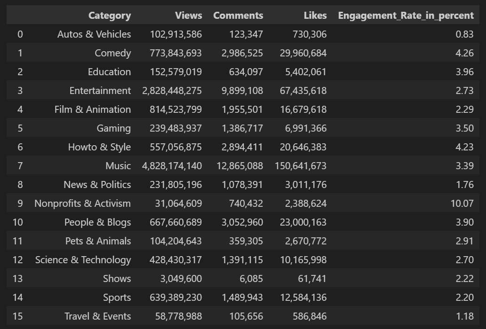

Exploratory Data Analysis: Estimates of Variability
Estimates of variability measures whether the data values are tightly clustered or spread out.

by Muhammad Reyhan Arighy Data Scientist
Introduction
Variability, often referred to as dispersion, is a fundamental aspect of data analysis. In statistics, it refers to the extent to which data points differ from each other. It assesses whether the data values are tightly clustered or widely spread out. Understanding variability is essential because it helps us make sense of the differences and patterns within a dataset.
It has several vital implications:
Standard Deviation and Related Estimates
The most widely used estimates of variation are based on the differences, or deviationsThe difference between the observed values and the estimate of location.
Synonym: errors, residuals, between the estimate of location and the observed data.
For instance, consider a dataset {1, 4, 4}. The mean is 3, and the median is 4. We can find how each data point deviates from this central value:
These deviations tell us how dispersed the data is around the central value. The result of these deviations adds up to precisely zero because the negative deviations balance the positive ones.
Measuring Variability
To measure variability, we need a way to consider the size of these deviations without canceling out the positive and negative values. A straightforward approach is to look at the average of the absolute values of the deviations from the mean. In the preceeding example, the absolute value of the deviations is {2 1 1}, and their average is (2 + 1 + 1) / 3 = 1.33. This is known as mean absolute deviationThe mean of the absolute values of the deviations from the mean.
Synonym: l1-norm, Manhattan norm and is computed with the formula:
where x̄ is the sample mean.
The best-known estimates of variability are varianceThe sum of squared deviations from the mean divided by n - 1 where n is the number of data values.
Synonym: mean-squared-errors and standard deviationThe square root of the variance.:
The standard deviation is much easier to interpret than the variance since it is on the same scale as the original data. It quantifies the average "distance" of data points from the mean, indicating how much data values tend to deviate from the average. Still, with its more complicated and less intuitive formula, it might seem peculiar that the standard deviation is preferred in statistics over the mean absolute deviation. It owes preeminence to statistical theory. Working with squared values is mathematically more advantageous than absolute values, particularly in statistical methods. Squaring ensures that larger deviations receive more weight, allowing for more accurate analysis of data distribution.
None of the variance, standard deviation, or mean absolute deviation are robust to outliers or extreme values. Outliers can heavily influence these measures, especially the variance and standard deviation, which are based on squared deviations. When outliers are present, these measures might not accurately reflect the central tendency and variability of the majority of the data.
A robust estimate of variability is median absolute deviationThe median of the absolute values of the deviations from the median. from the median or MAD:
where m is the median. Like the median, the MAD is not influenced by extreme values. It is also possible to compute a trimmed standard deviation analogous to the trimmed mean.
The variance, the standard deviation, the mean absolute deviation, and the median absolute deviation from the median are not equivalent estimates, even in the case where the data comes from a normal distribution. In fact, the standard deviation is always greater than the median absolute deviation. Sometimes, the median absolute deviation is multiplied by a constant scaling factor to put the MAD on the same scale as the standard deviation in the case of normal distribution. The commonly used factor of 1.4826 means that 50 % of normal distribution fall within the range ±MAD.
Degrees of Freedom, and n or n - 1?
In statistics books, there is always some discussion of why we have n - 1 in the denominator in the variance formula, instead of n, leading into the concept of degrees of freedom. This distinction is not important since n is generally large enough that it won't make much difference whether you divide by n or n - 1. But in case you are interested, here is the story. It is based on the premise that you want to make estimates about a population, based on a sample.
If you use the intuitive denominator of n in the variance formula, you will underestimate the true value of the variance and the standard deviation in the population. This is referred to as a biased estimate. However, if you divide by n - 1 instead of n, the variance becomes an unbiased estimate.
To fully explain why using n leads to a biased estimate involves the notion of degrees of freedom, which takes into account the number of constraints in computing an estimate. In this case, there are n - 1 degrees of freedom since there is one constraint: the standard deviation depends on calculating the sample mean. For most problems, data scientists do not need to worry about degress of freedom.
Estimates Based on Percentiles
A different approach to estimating dispersion is based on looking at the spread of the sorted data. Statistics based on sorted (ranked) data are referred to as order statisticsMetrics based on the data values sorted from smallest to biggest.
Synonym: ranks. One of the most straightforward ways to estimate dispersion is by calculating the rangeThe difference between the largest and the smallest value in a data set., which is the difference between the largest and smallest values in a dataset. However, the range can be significantly influenced by outliers, making it less useful as a general measure of dispersion in the data.
To avoid the sensitivity to outliers, we can look at the range of the data after dropping values from each end. Formally, these types of estimates are based on differences between percentilesThe value such that P percent of the values take on this value or less and (100 - P) percent take on this value or more.
Synonym: quantile. In a data set, the Pth percentile is a value such that at least P percent of the values take on this value or less and at least (100 - P) percent of the values take on this value or more. For instance, the 80th percentile is the value below which 80 percent of the data falls. This technique is particularly useful for identifying the median, which is the same as the 50th percentile. The percentile is essentially the same as a quantile, with quantiles indexed by fractions (so the .8 quantile is the same as the 80th percentile).
A common measurement of variability is the difference between 25th percentile (the lower quartile) and the 75th percentile (the upper quartile), called interquartile rangeThe difference between the 75th percentile and the 25th percentile.
Synonym: IQR which is less sensitive to outliers. Here is a simple example: {3, 1, 5, 3, 6, 7, 2, 9}. We sort these to get {1, 2, 3, 3, 5, 6, 7, 9}. The 25th percentile is at 2.5, and the 75th percentile is at 6.5, so the interquartile range is 6.5 - 2.5 = 4. Software can have slightly differing approaches that yield answers; typically, these differences are smaller.
Exact percentile calculations can be computationally expensive, especially for large datasets that require sorting. To address this, machine learning and statistical software often employ specialized algorithms, like the Zhang-Wang-2007 method, to obtain approximate percentiles quickly with guaranteed accuracy.
Percentile: Precise Definition
If we have an even number of data (n is even), then the percentile is ambiguous under the preceeding definition. In fact, we could take on any value between the order statistics x(j) and x(j + 1) where j satisfies:
Formally, the percentile is the weighted average:
for some weight between 0 and 1. Statistical software has slightly differing approaches to choosing w. At the time of this writing, Python's numpy.quantile supports nine approaches, those are inverted cdf, averaged inverted cdf, closest observation, interpolated inverted cdf, hazen, weibull, linear, median unbiased, and normal unbiased.
Example: Variability Estimates of Youtube Views
Table below shows data set containing a number of views and associated engagement rate (ratio of total likes and comments per total views) for each category in US Youtube trending videos.
The Pandas data frame provides methods for calculating standard deviation and quantiles. Using the quantiles, we can easily determine the IQR. For the robust MAD, we use the function robust.scale.mad from the statsmodels package:
The standard deviation is almost three times as large as the MAD. This is not suprising since the standard deviation is sensitive to outliers.
Key Ideas
Further Reading